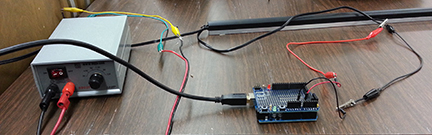
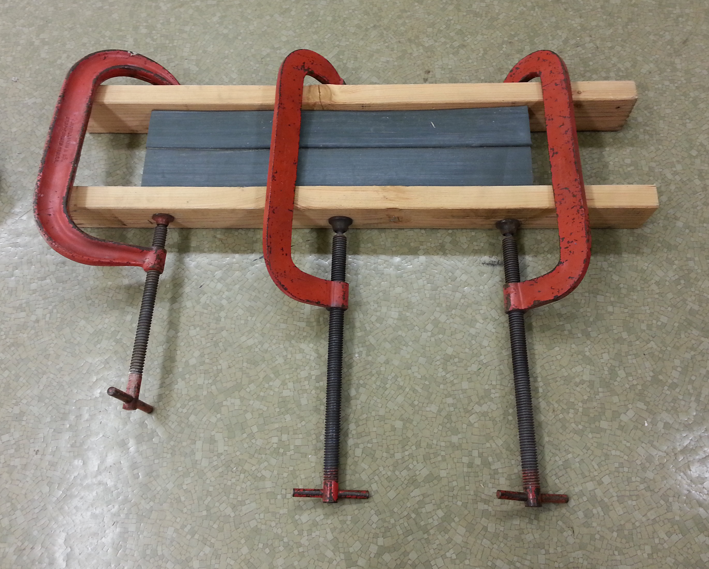
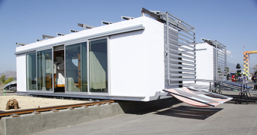

As part of CS/EE/ME 75: Introduction to Multidisciplinary Systems Engineering, Caltech teamed up with the Southern California Institute of Architecture (SCI-Arc) to build DALE, a zero net energy home that consisted of two reconfigurable modules on a rail system.
Team SCI-Arc/Caltech's final AV presentation
On the Movement and Safety team, I tested pressure sensors and gaskets. We determined the minimum amount of force needed for the pressure sensors to detect that an object was in the path of the closing home and where the sensors were not responsive.
Pressure sensor testing setup
The white areas denoted where the sensor was not responsive
We also determined how much the gaskets need to be compressed in order to create an air- and water-tight seal for the closed home.
Gasket testing setup
I also spent part of the summer working on the Build team. In particular, I worked on installing insulation, wiring according to building codes, and edge banding for our cabinets.
DALE, circa July 2013
Team SCI-Arc/Caltech hard at work
Installing insulation into the floor
Wiring in progress
The team edge banding in the shop
On the Communications team, I coordinated blog posts spotlighting SCI-Arc and Caltech team members and worked on website compatibility with different web browsers. Our team also invited the Caltech community to the Solar Decathlon competition in Irvine, CA to see DALE so I made posters and coordinated signups for transportation.
For two weeks, DALE competed against 18 other houses in various competitions. The competition was open to the public on the weekends and we had a great time introducing DALE to everyone! In the end, we tied for first in the Energy Balance competition and received fourth place in the Communications competition.
DALE at the U.S. Department of Energy Solar Decathlon 2013 competition